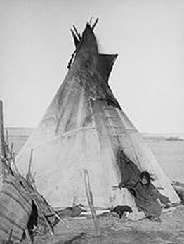
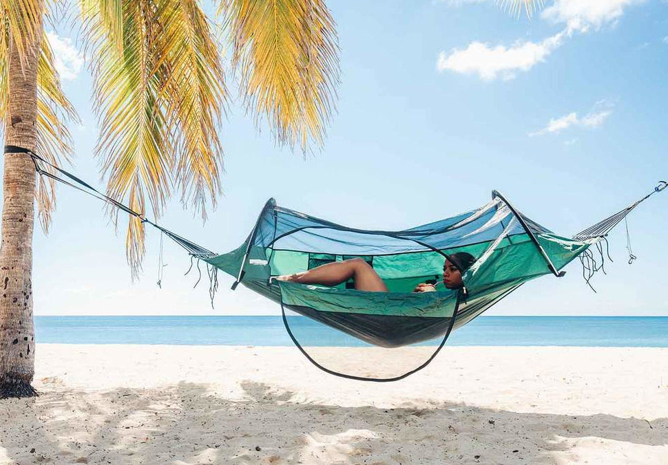
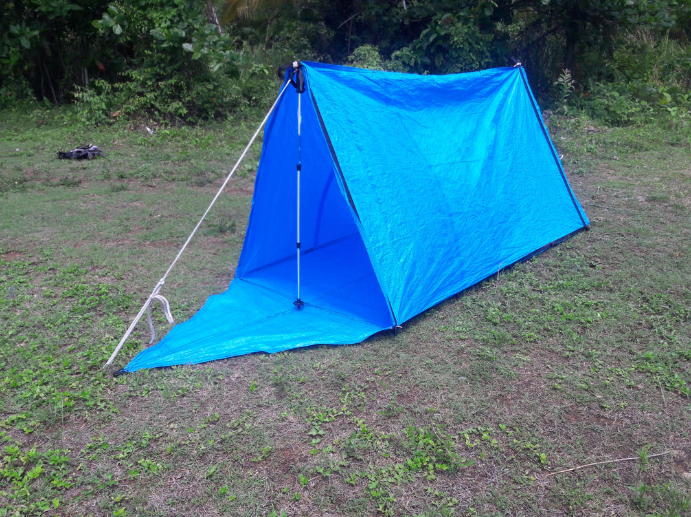
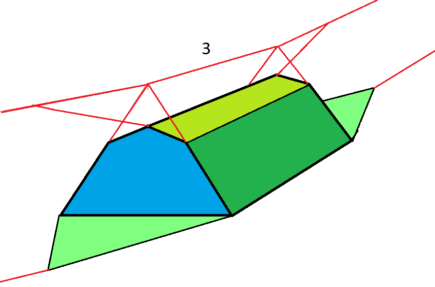
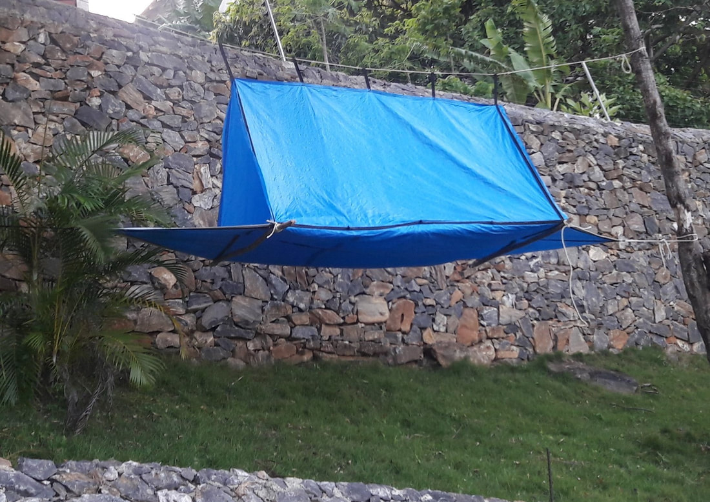
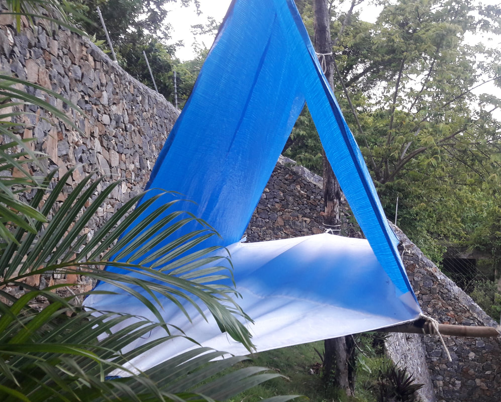
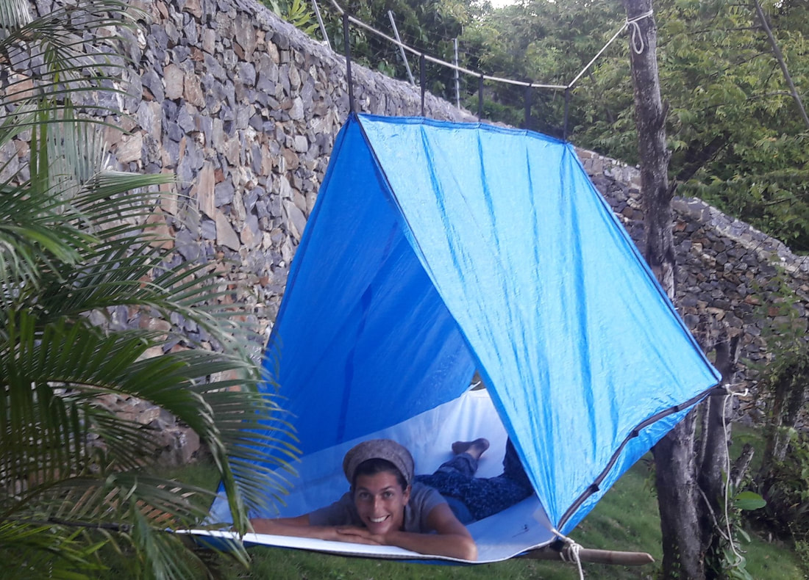
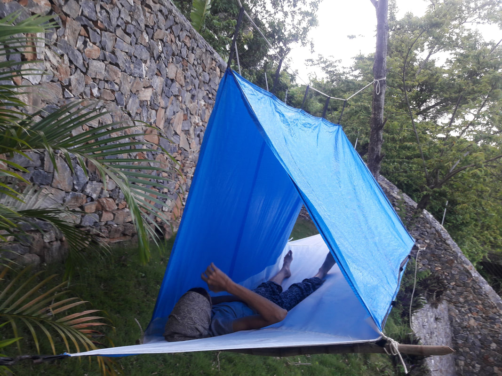
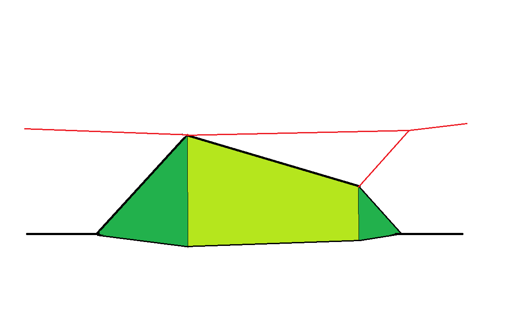

For thousands of years a tent has been "a portable shelter made of cloth, supported by one or more poles and stretched tight by cords or loops attached to pegs driven into the ground" (wikipedia)

Native american tipi Credit : https://fr.wikipedia.org

Modern tent Credit : www.reliable-cars.com
In the last 10 years appeared new ways to sleep outdoor, not on the ground but above it, using trees !

Hammock with bug net Credit : www.lawsonhammock.com

3-tree tent by Tentsile Credit : https://www.tentsile.com
I have developped a new way to do so, with most pros of the other solutions and not their cons.

This is the first 2-tree tent, from my researches on internet.
This prototype is just a proof of concept made with cheap and too light tarpaulin. The tent floor is supposed to be much stiffer.
It can be installed anywhere there are trees, whatever the slope and condition of the ground.
This prototype is just a proof of concept made with cheap and too light tarpaulin. The tent floor is supposed to be much stiffer.
It can be installed anywhere there are trees, whatever the slope and condition of the ground.

It requires 2 strong walking sticks or 2 tree branches to strech the small sides of the floor.
It is versatile in the way that it can be installed on a flat floor in case trees or poles are missing.
In that case the 2 sticks are put vertically and 6 pegs are required.
In that case the 2 sticks are put vertically and 6 pegs are required.

Cons of the existing concepts
Classic tent |
3-tree tent |
Hammock |
difficult finding a flat smooth floor |
difficult to find 3 well-placed trees (right angle and distance) |
uncomfortable, requires sleeping on your back |
moisture of the soil |
still has a complex frame |
limited to one person |
discomfort because the floor is hard and often bumpy |
||
need to bring a cumbersome foam mattress or an heavy inflatable mattress |
||
The rigid structure is heavy and cumbersome |
2-tree tent concept
- a Canadian type tent hanging on trees
- without internal frame
- the only rigid frame consists of 2 straight elements to be installed horizontally on the small sides of the floor
- the rigid elements can be 2 tree branches or 2 strong walking sticks
- the floor of the tent, which must be particularly resistant, is strongly stretched between 2 trees (for example with rope or ratchet strap)
- the roof of the tent is stretched between the same two trees, which gives the stability of the tent
- the floor is extended on its 2 small sides by a triangle of fabric or ropes to spread the effort
- the first step consists in placing 4 self-tightening textile "collars" around 2 trees
- without internal frame
- the only rigid frame consists of 2 straight elements to be installed horizontally on the small sides of the floor
- the rigid elements can be 2 tree branches or 2 strong walking sticks
- the floor of the tent, which must be particularly resistant, is strongly stretched between 2 trees (for example with rope or ratchet strap)
- the roof of the tent is stretched between the same two trees, which gives the stability of the tent
- the floor is extended on its 2 small sides by a triangle of fabric or ropes to spread the effort
- the first step consists in placing 4 self-tightening textile "collars" around 2 trees
Advantages
2- great comfort whatever the condition of the ground, no need to transport a mattress
- great ease of installation, just stretch 2 ropes between 2 trees
- the tent will be horizontal whatever the slope (hiking in the mountains)
- lightness and simplicity: no rigid structure, only textile
- you will be safe from a large number of animals (choose the height according to the type of animals to avoid)
- in a desert environment (no tree), set the tent on the ground (a peg at each corner), place the 2 sticks vertically and stretch the roof ropes with 2 pegs (the height of the tent should not exceed its width, so that you can use the same sticks)
- campsites can easily adapt by planting trees or poles
- great ease of installation, just stretch 2 ropes between 2 trees
- the tent will be horizontal whatever the slope (hiking in the mountains)
- lightness and simplicity: no rigid structure, only textile
- you will be safe from a large number of animals (choose the height according to the type of animals to avoid)
- in a desert environment (no tree), set the tent on the ground (a peg at each corner), place the 2 sticks vertically and stretch the roof ropes with 2 pegs (the height of the tent should not exceed its width, so that you can use the same sticks)
- campsites can easily adapt by planting trees or poles
Options
- - awnings to protect the entry and the opposite side (triangles)
- the 2 triangles are closed at 100% with mosquito nets, one fix and one with 2 zips on its rising sides.
- each of the 2 triangles is equipped with a waterproof canvas with 2 zips on its rising sides. They are placed on the inner side of the tent so that one can adjust during the night the size of the windows (according to temperature, rain, wind)
- a mini-bubble level to find the horizontality between the 2 low attachment points on the trees
- a means of measuring the height of the high attachment points relative to the lower attachment points
- the 2 rigid elements can be replaced by 4 cords (diagram 1), one at each corner, stretched towards the ground on solid pegs
- one can stiffen the floor by adding on each large side of the floor a small network of ropes (diagram 2) stretched towards the ground on a solid peg
- we can consider a solid frame around the floor (heavier version but very good tension of the floor)
- insulating and mosquito-proof floor made of a solid fabric + an open cell foam layer under it + a light cloth
- The ropes are preferably made of high tenacity polyethylene, the straps made of polyester (no polyamide/nylon)
- hanging systems and storage for backpacks and other belongings
- double roof with cords and pegs at the 4 corners
- khaki colors for hikers who want to blend in with nature
- 2 bedrooms / 4 people model with a width of 190cm
- variant of the roof shape (diagram 3)


UPDATE June 18th, 2019
A light Dacron fabric has been added to the floor, allowing stretching it much more than on the previous version.
I can do nothing more for those who still think it's a hammock...
It's just the most comfortable and versatile light weight tent ever.
I can do nothing more for those who still think it's a hammock...
It's just the most comfortable and versatile light weight tent ever.

Proven total stability

Easy to install

Stable and comfortable even when sitting on one side

Floor (poorly) stretched with 2 tree branches

Can be settled at any height on any kind of ground conditions

The difference with a hammock : you can sleep on your stomach

Stable and comfortable when laying on one side

Another design option which addresses rain issue and allows lighter tent
This invention has not been protected (except from predators by being published) and is offered in an open-source spirit. Brands are welcome to use it.
Published on June 8th, 2019